weekly target: Revenue per sku/week. Configuration selected using expanding-window and held-out validation RMSE. Final fit uses train plus validation. Test predicts one week ahead with observed past revenue/sales. Revenue = price_unit × units_sold, cộng theo sku × tuần qua channel, region và pack_type. Tuần bắt đầu thứ Hai. train: 08/08/2022 đến 22/10/2023, 1260 mẫu. validation: 23/10/2023 đến 26/05/2024, 620 mẫu. test: 27/05/2024 đến 29/12/2024, 620 mẫu.
| model | fit_seconds | mae | mse | rmse | r2 |
|---|---|---|---|---|---|
| linear_regression | 0.1439 | 553.3854 | 479512.6627 | 692.4685 | 0.6704 |
| decision_tree | 0.5278 | 571.7894 | 520245.5317 | 721.2805 | 0.6424 |
| random_forest | 13.3672 | 532.7812 | 450546.9071 | 671.2279 | 0.6903 |
| gradient_boosting | 2.7943 | 546.2439 | 470837.1209 | 686.1757 | 0.6763 |
| mean_baseline | 0.0000 | 1005.8798 | 1507720.7675 | 1227.8928 | -0.0364 |
| last_week_baseline | 0.0000 | 910.3548 | 1373675.8889 | 1172.0392 | 0.0557 |
| rolling_7_baseline | 0.0000 | 606.0890 | 595377.8900 | 771.6073 | 0.5907 |
| rolling_28_baseline | 0.0000 | 1057.0406 | 1661167.8487 | 1288.8630 | -0.1419 |
| weekday_4_baseline | 0.0000 | 1208.4414 | 2180316.5278 | 1476.5895 | -0.4987 |
| product_mean_baseline | 0.0000 | 973.9377 | 1419390.9349 | 1191.3819 | 0.0243 |
{
"linear_regression": {
"alpha": 10.0,
"learning_rate": 0.1,
"n_iterations": 3000,
"feature_set": "robust"
},
"decision_tree": {
"max_depth": 10,
"min_samples_leaf": 20,
"feature_set": "trend"
},
"random_forest": {
"n_estimators": 80,
"max_depth": 14,
"min_samples_leaf": 10,
"feature_set": "robust"
},
"gradient_boosting": {
"n_estimators": 100,
"max_depth": 2,
"learning_rate": 0.05,
"feature_set": "trend"
}
}Mô hình được chọn bằng dữ liệu phát triển là gradient_boosting. RMSE test 686.1757, R² 0.6763. Mức giảm RMSE so với baseline trung bình là 44.12%.
R² test của mô hình được chọn là 0.6763. Kết quả phản ánh một lần chia theo thời gian. Không dùng bảng test để chọn lại cấu hình.
Top sản phẩm được cố định từ toàn bộ train trước walk-forward. Các fold kiểm chứng dự báo trong phạm vi sản phẩm này, chưa mô phỏng việc chọn lại danh mục tại từng mốc quá khứ.
Không có giao dịch được quy ước là 0, nhưng dữ liệu không phân biệt hết hàng, đóng cửa và không có nhu cầu. Chỉ giữ tuần đầy đủ từ thứ Hai đến Chủ nhật.
Các đặc trưng robust gồm trung vị, độ lệch chuẩn 7/28 tuần, số tuần doanh thu 0, trung bình cùng thứ bốn mốc cách 7 tuần và cờ cuối tuần. Tất cả chỉ dùng lịch sử trước ngày dự báo.
Mô hình cải thiện RMSE so với baseline trung bình trên 20/20 sản phẩm. Xem evaluation/product_baseline_comparison.csv để đối chiếu từng sản phẩm với các baseline lịch sử.
Baseline trung bình 28 tuần đạt RMSE 1288.8630, trong khi mô hình được chọn đạt 686.1757. Mức giảm RMSE so với baseline này là 46.76%.
Đơn vị source price_unit currency. Công thức price_unit * units_sold; negative units excluded; zero units retained. Số dòng nguồn 190757, số dòng hợp lệ 190754, loại 3 dòng không hợp lệ sau loại trùng.
Điểm chọn cấu hình là selection_rmse, trung bình RMSE của ba cửa sổ train mở rộng và validation cuối. Cấu hình được chốt trước khi đánh giá test.
random_forest có RMSE thấp nhất trên test trong bảng này. gradient_boosting là mô hình được chọn từ validation và dùng mặc định để dự đoán. Thứ hạng test được dùng để mô tả kết quả, không dùng để thay đổi mô hình đã chọn.
| sku | date | Revenue | predicted | absolute_error |
|---|---|---|---|---|
| YO-012 | 2024-07-22 | 9059.57 | 7050.62 | 2008.95 |
| YO-016 | 2024-06-10 | 9360.71 | 7470.17 | 1890.54 |
| JU-021 | 2024-08-26 | 4322.19 | 6192.14 | 1869.95 |
| YO-029 | 2024-07-01 | 5640.78 | 7504.22 | 1863.44 |
| MI-006 | 2024-07-29 | 3634.04 | 5379.80 | 1745.76 |
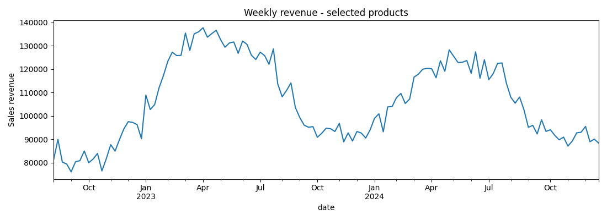
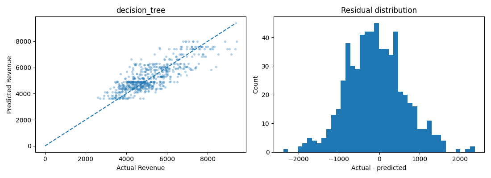
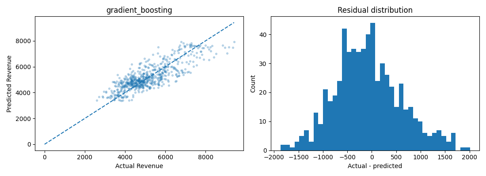
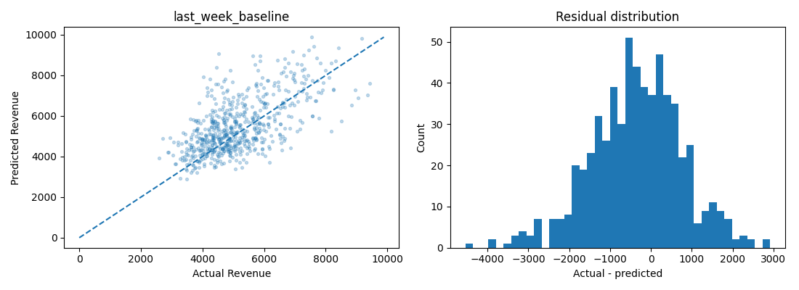
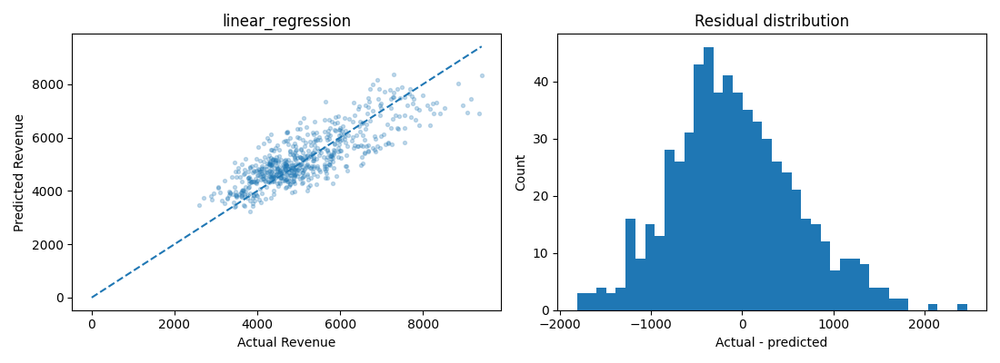
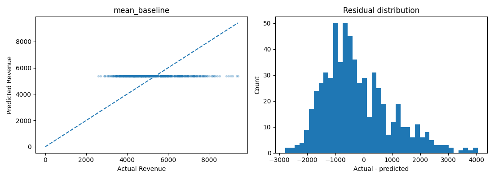
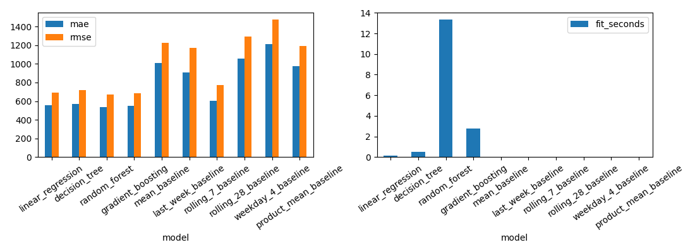
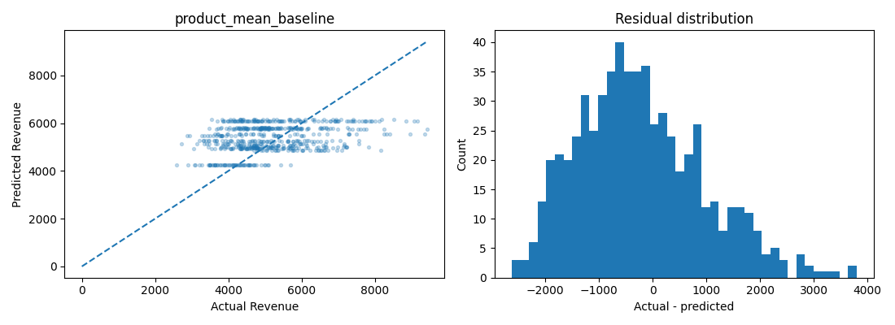
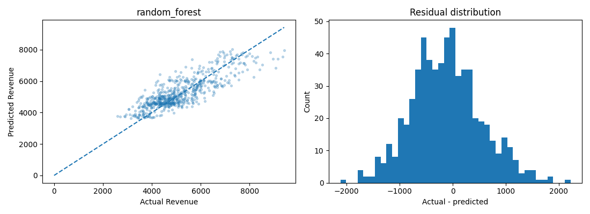
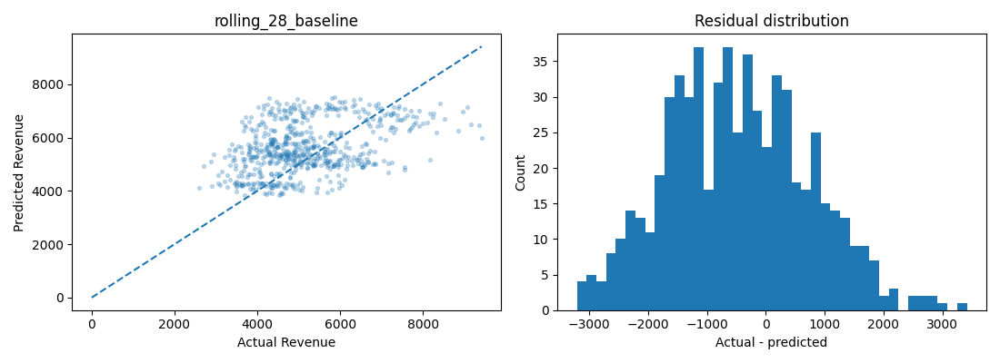
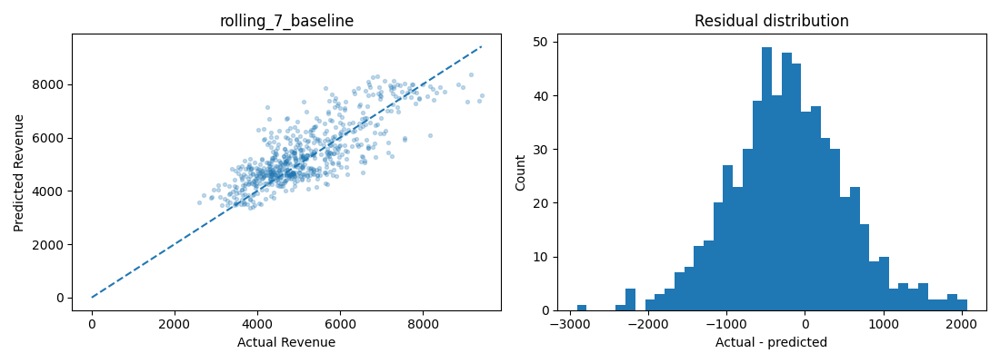
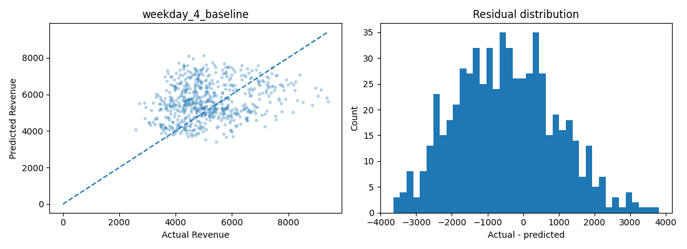